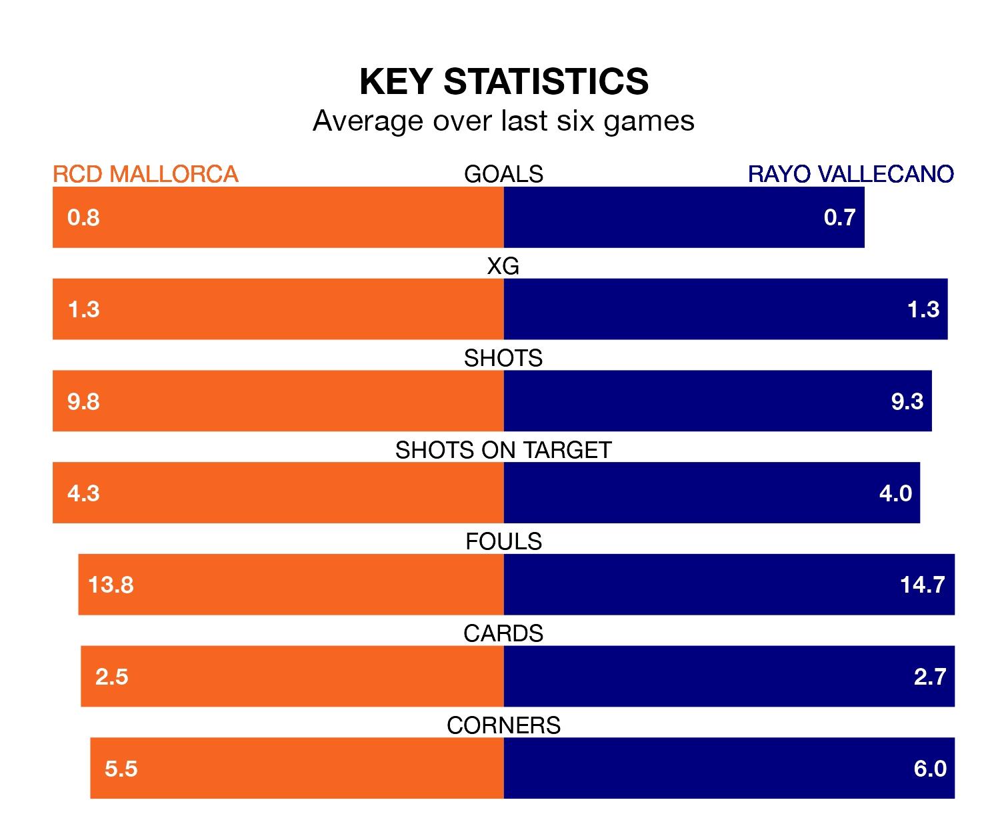

RCD Mallorca face Rayo Vallecano at Estadi Mallorca Son Moix on Sunday looking to secure a first win in six La Liga games.
Mallorca have lost three and drawn two matches since they last earned three points – against CA Osasuna on December 21.
They face a Rayo side who have won just one and drawn one over that time.
In the last 10 years, Mallorca and Rayo have played each other on 10 occasions. Mallorca won five of them, Rayo four, and they drew once.
On average, Mallorca scored 1.5 goals and Rayo 1.1 in those matches.
Their last meeting was on September 30, when they played out a 2-2 draw.
With Stole Dimitrievski between the sticks, Rayo can rely on one of the league's safest pair of hands. He has kept nine clean sheets in his 23 appearances this season, and only two other 'keepers – Athletic Club Bilbao's Unai Simón and Real Sociedad's Álex Remiro – have been able to prevent the opposition scoring on more occasions in La Liga.
In Mallorca's net, Predrag Rajković has six clean sheets in 23 games. He has conceded a goal every 74 minutes, only slightly more often than the 77 minutes between goals for Dimitrievski.
The hosts are 17th in the table after 23 games, of which they have won three and drawn 11, earning 20 points.
The away team are four places ahead of Mallorca in 13th, with five wins and nine draws putting them on 24 points.
With 19 goals in 23 games so far this season, Mallorca are the league's second-lowest scorers with 0.8 goals per game. And they are conceding at an average rate, letting in 30 goals at a rate of 1.3 per game.
Rayo are also below average scorers, with 0.9 goals per game, compared to a league average of 1.3. They have conceded 1.3 goals per game.
Mallorca's last match was on February 2, a 4-0 loss against Athletic Club Bilbao.
Rayo lost 2-1 against Sevilla last time out, on Monday, with Isi Palazón on the scoresheet.
Updated: 10:28 (UTC), 06/02/24